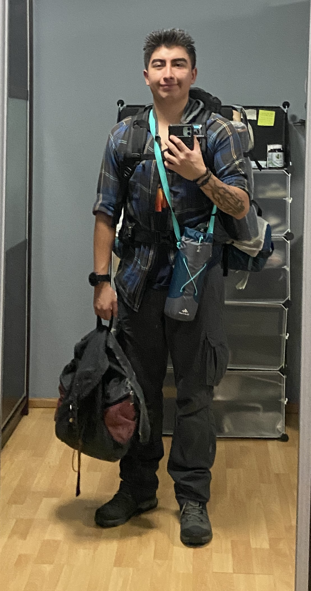

Hola, soy estudiante de la universidad de Amerike, estoy estudiando la carrera de ciberseguridad y desde niño me ha fasinado laas aventuras, deportes extremos y las grandes emociones; siempre ando en busca del peligro y la sensación de la adrenalina, quizá la gente lo vea sucida, pero a mi no me importa lo que la gente piense u opine. Esta es mi vida y así la estoy viviendo.

Sitio hecho con 11ty por @jonmircha